Blog
Plain-language guides to 106 prescription, over-the-counter, and controlled substances, plus rule changes and safety alerts. Every guide answers the key questions first and links to its sourced profile.
Latest news
Substance guides
106 guides shown
Opioids
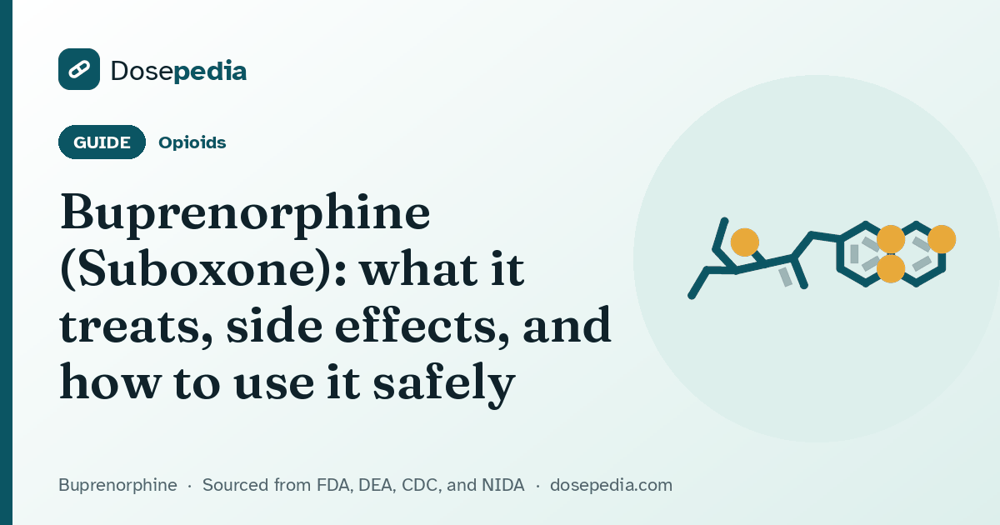
Buprenorphine (Suboxone): what it treats, side effects, and how to use it safely
Buprenorphine is a partial opioid agonist and one of the most effective treatments for opioid use disorder. It eases withdrawal and cravings, blocks other...
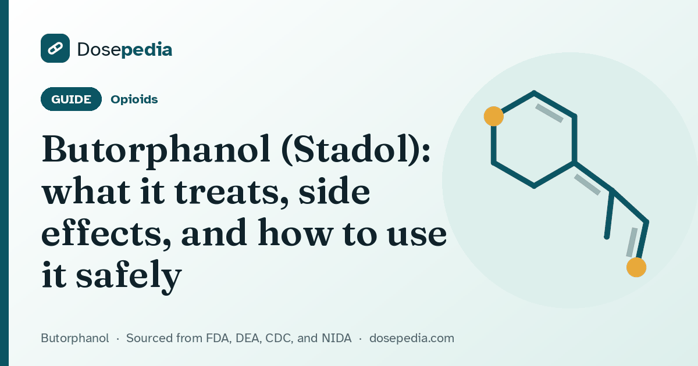
Butorphanol (Stadol): what it treats, side effects, and how to use it safely
Butorphanol is a prescription opioid that activates kappa opioid receptors and partly blocks mu receptors. It is a Schedule IV controlled substance, most...
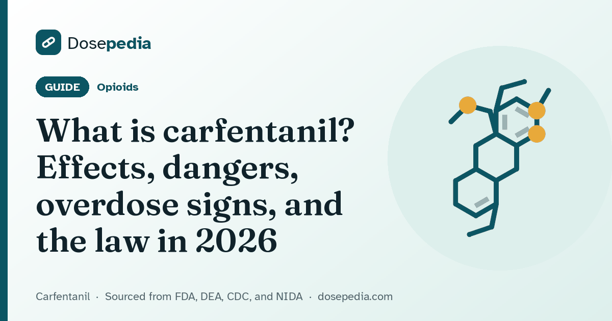
What is carfentanil? Effects, dangers, overdose signs, and the law in 2026
Carfentanil is a synthetic opioid about 100 times more potent than fentanyl and 10,000 times more potent than morphine. It was developed to sedate...
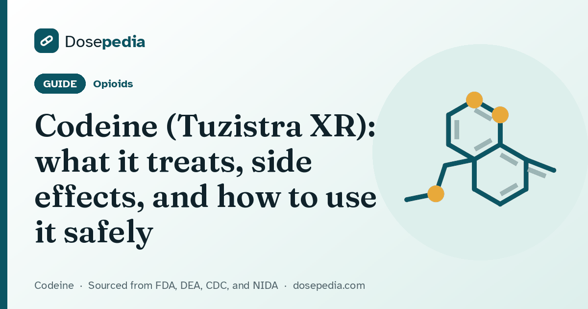
Codeine (Tuzistra XR): what it treats, side effects, and how to use it safely
Codeine is a mild opioid used for pain and, in some products, for cough. The body converts it into morphine, and how fast that happens varies with...
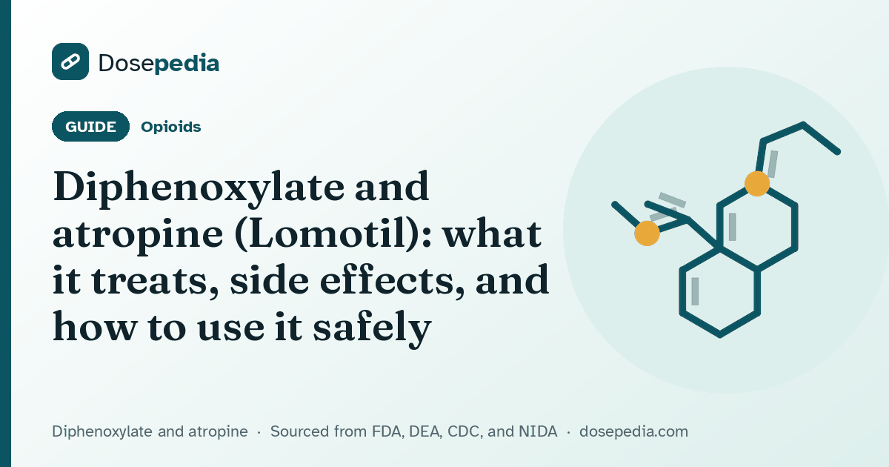
Diphenoxylate and atropine (Lomotil): what it treats, side effects, and how to use it safely
Lomotil combines diphenoxylate, an opioid-related drug that slows the gut, with a small dose of atropine added to discourage misuse. It treats diarrhea...
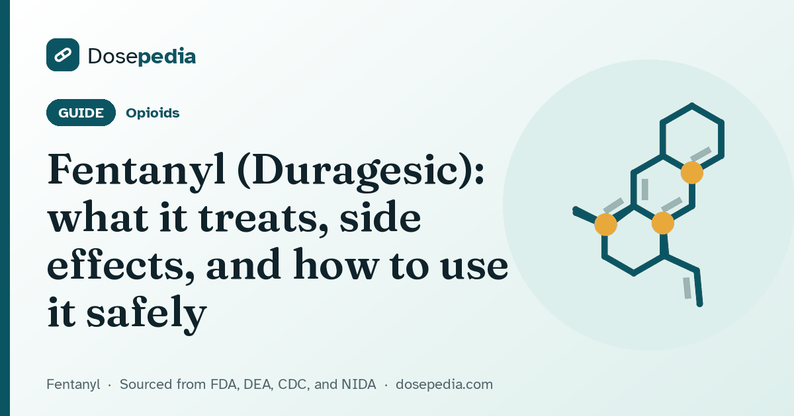
Fentanyl (Duragesic): what it treats, side effects, and how to use it safely
Fentanyl is a synthetic opioid about 50 times stronger than heroin and 100 times stronger than morphine. Pharmaceutical fentanyl is used in anesthesia and...
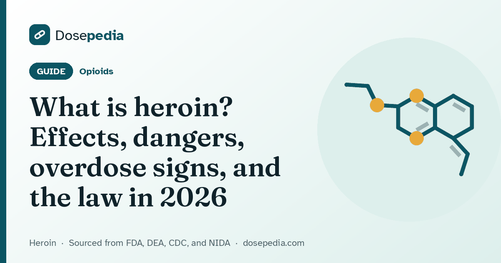
What is heroin? Effects, dangers, overdose signs, and the law in 2026
Heroin is an illegal opioid made from morphine. It is a Schedule I controlled substance in the US, with no accepted medical use. Most of the US heroin...
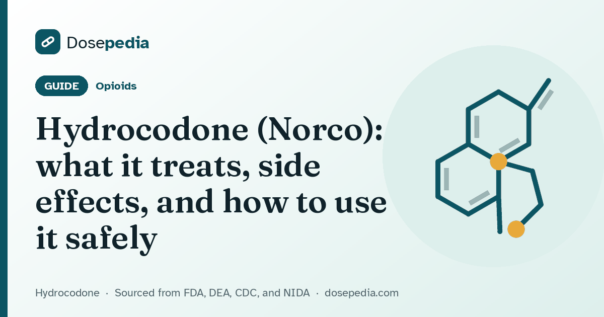
Hydrocodone (Norco): what it treats, side effects, and how to use it safely
Hydrocodone is a prescription opioid for severe pain, most often combined with acetaminophen in products such as Norco and Vicodin. It has been a Schedule...
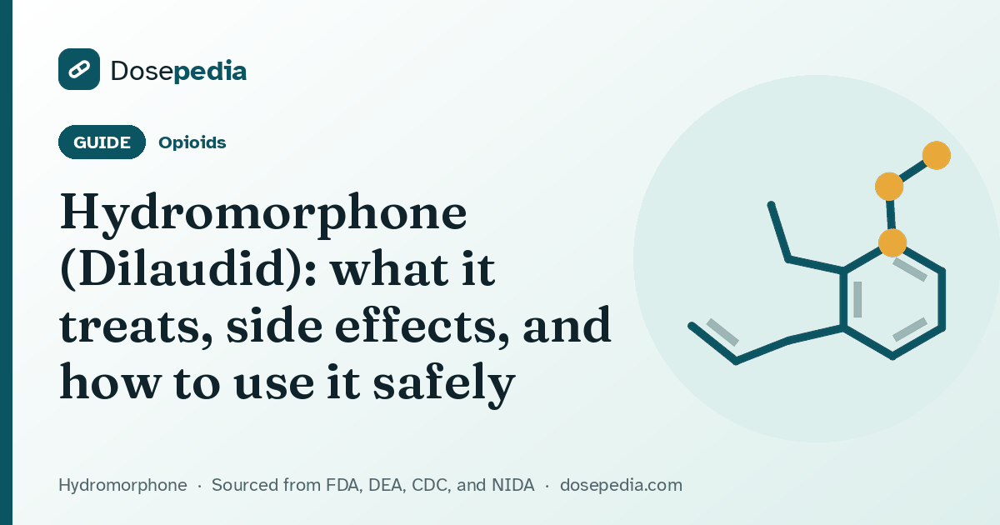
Hydromorphone (Dilaudid): what it treats, side effects, and how to use it safely
Hydromorphone (Dilaudid) is a potent opioid, about five times stronger than morphine by mouth, used for severe pain in hospitals, after surgery, and in...
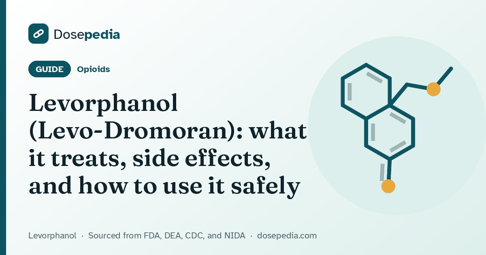
Levorphanol (Levo-Dromoran): what it treats, side effects, and how to use it safely
Levorphanol is a potent, long-acting prescription opioid for severe pain. It is a Schedule II controlled substance. Besides activating opioid receptors...
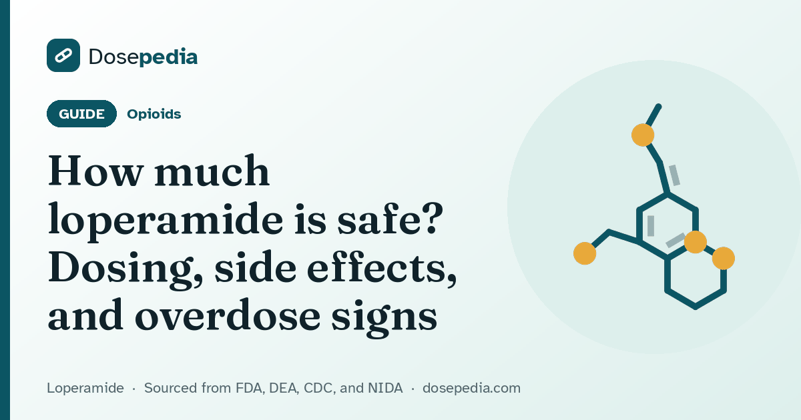
How much loperamide is safe? Dosing, side effects, and overdose signs
Loperamide (Imodium) is an over-the-counter diarrhea medicine that acts on opioid receptors in the gut. At label doses it is safe and does not reach the...
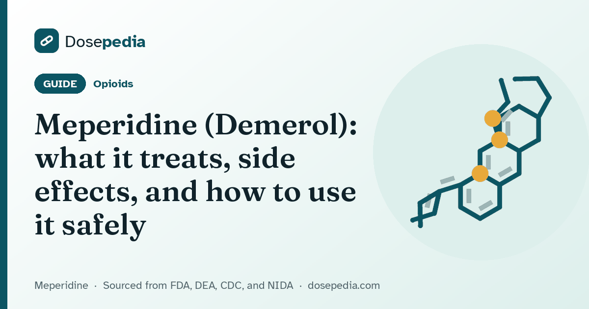
Meperidine (Demerol): what it treats, side effects, and how to use it safely
Meperidine (Demerol), called pethidine outside the US, is a synthetic opioid for short-term acute pain. It is a Schedule II controlled substance. It is...
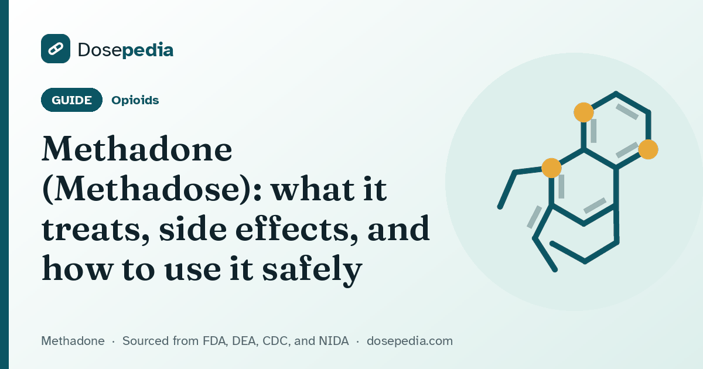
Methadone (Methadose): what it treats, side effects, and how to use it safely
Methadone is a long-acting opioid used to treat opioid use disorder and severe pain. As treatment for addiction, it cuts the risk of death by about half...
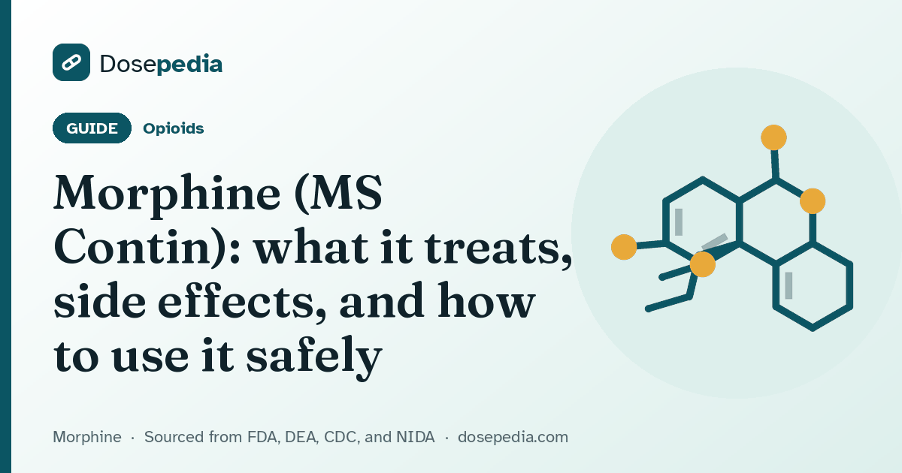
Morphine (MS Contin): what it treats, side effects, and how to use it safely
Morphine is the original opioid pain medicine, extracted from the opium poppy, and the standard against which other opioids are measured. It is used for...
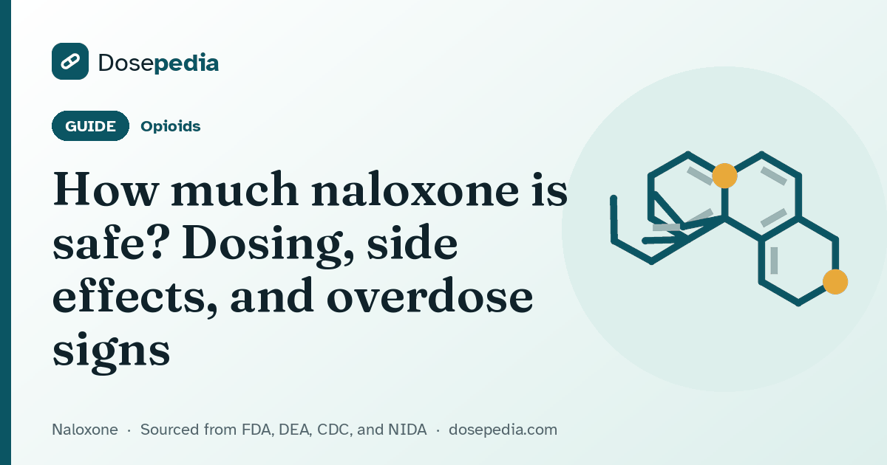
How much naloxone is safe? Dosing, side effects, and overdose signs
Naloxone is an emergency medicine that reverses opioid overdose by knocking opioids off their receptors. Narcan and RiVive nasal sprays have been sold...
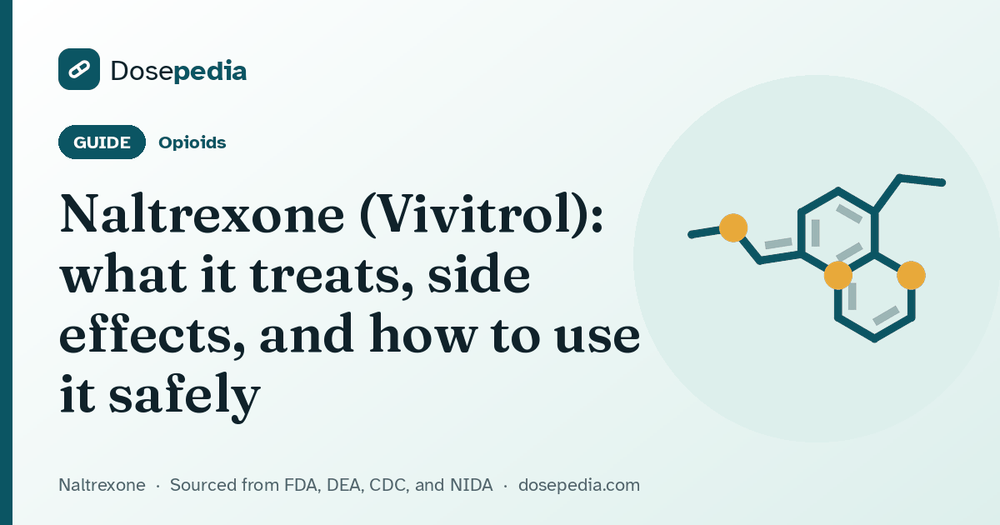
Naltrexone (Vivitrol): what it treats, side effects, and how to use it safely
Naltrexone is a prescription medicine that blocks opioid receptors. It treats alcohol use disorder and, after detox, opioid use disorder, as a daily pill...
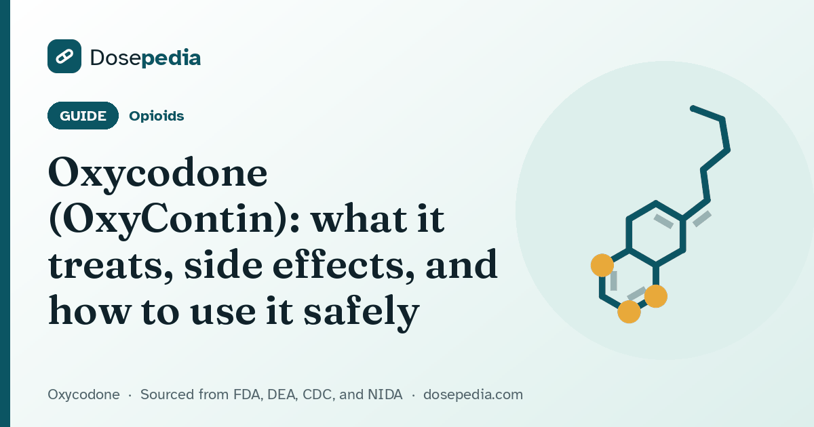
Oxycodone (OxyContin): what it treats, side effects, and how to use it safely
Oxycodone is a strong prescription opioid used for pain severe enough to need an opioid when other treatments are not enough. It is sold alone...
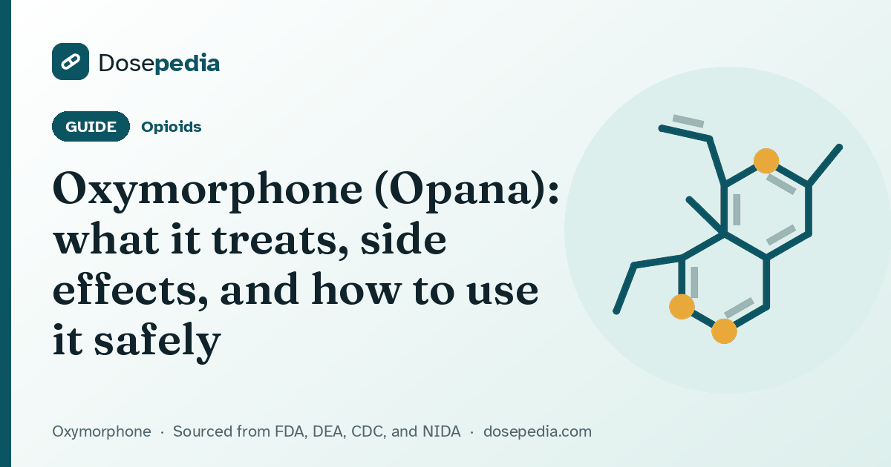
Oxymorphone (Opana): what it treats, side effects, and how to use it safely
Oxymorphone is a strong prescription opioid for severe pain, roughly twice as potent as oxycodone by mouth. It is a Schedule II controlled substance. The...
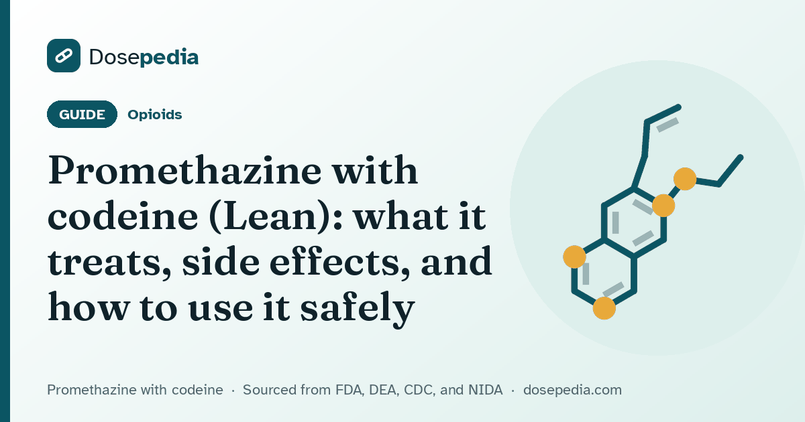
Promethazine with codeine (Lean): what it treats, side effects, and how to use it safely
Promethazine with codeine is a prescription cough syrup that combines codeine, an opioid, with promethazine, a sedating antihistamine. It is a Schedule V...
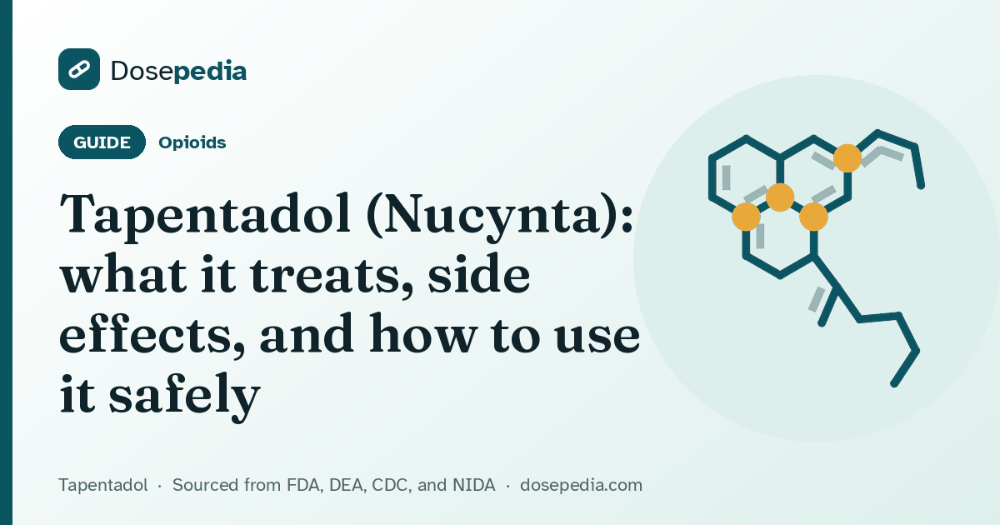
Tapentadol (Nucynta): what it treats, side effects, and how to use it safely
Tapentadol (Nucynta) is a prescription opioid that also blocks norepinephrine reuptake. It is used for acute pain and, in extended-release form, for...
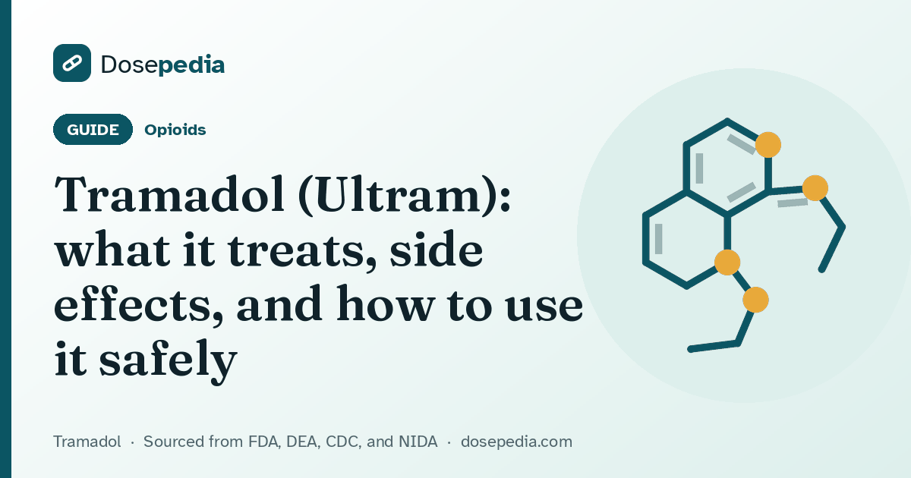
Tramadol (Ultram): what it treats, side effects, and how to use it safely
Tramadol is a prescription pain medicine that acts as a weak opioid and also raises serotonin and norepinephrine levels. It is a Schedule IV controlled...
Benzodiazepines and sedatives
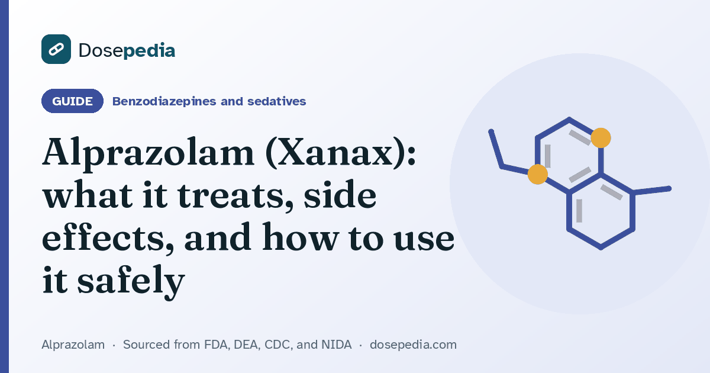
Alprazolam (Xanax): what it treats, side effects, and how to use it safely
Alprazolam (brand name Xanax) is a short-acting benzodiazepine prescribed for generalized anxiety disorder and panic disorder. It is a Schedule IV...
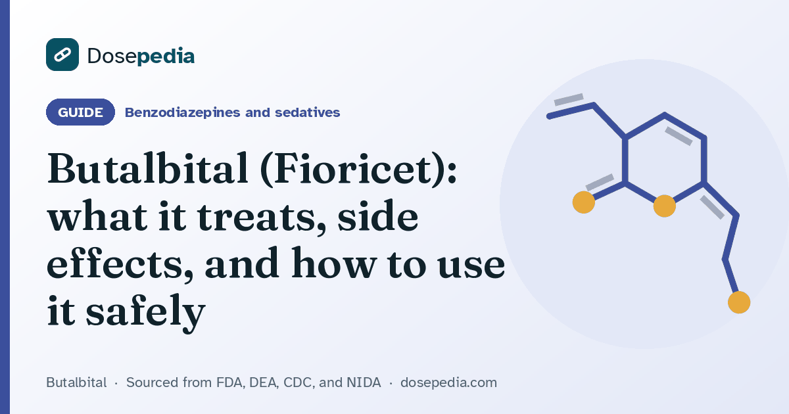
Butalbital (Fioricet): what it treats, side effects, and how to use it safely
Butalbital is a barbiturate sedative sold only in combinations, such as Fioricet (with acetaminophen and caffeine) and Fiorinal (with aspirin and...
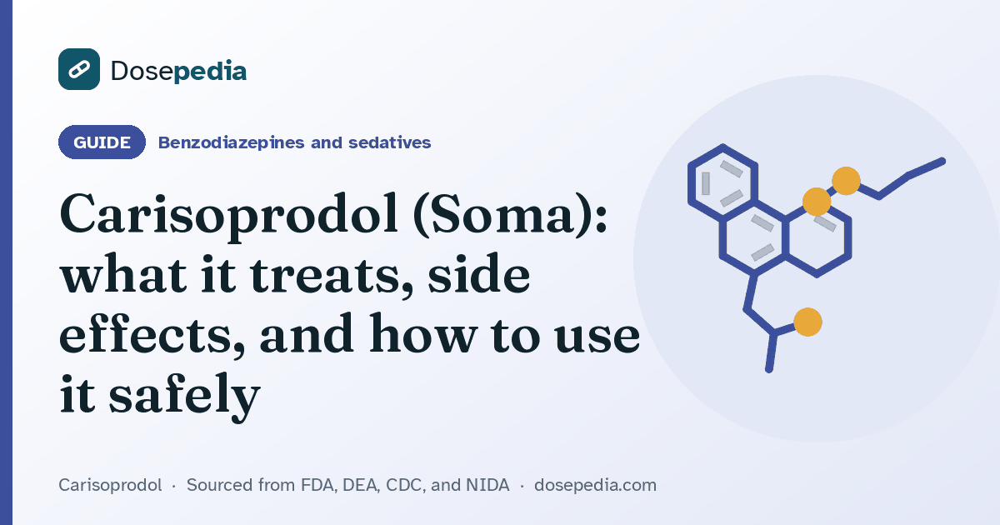
Carisoprodol (Soma): what it treats, side effects, and how to use it safely
Carisoprodol (Soma) is a muscle relaxant for short-term relief of acute, painful muscle conditions, used for no more than two or three weeks. The body...
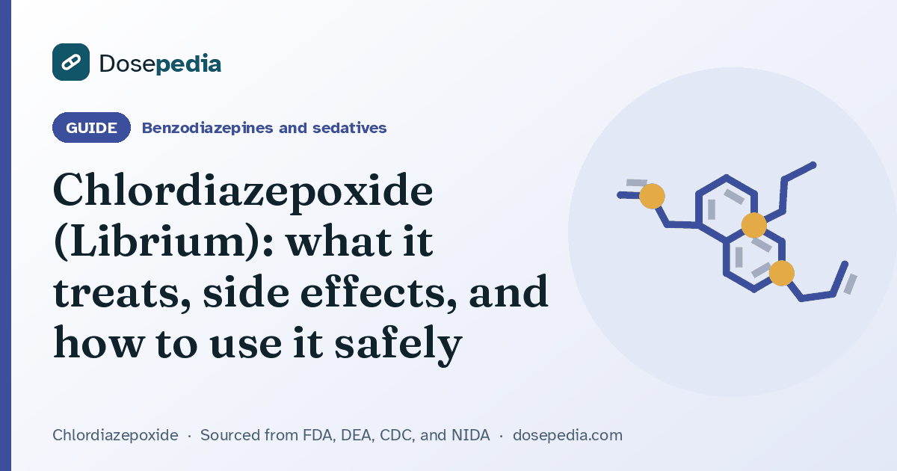
Chlordiazepoxide (Librium): what it treats, side effects, and how to use it safely
Chlordiazepoxide (Librium) was the first benzodiazepine, introduced in 1960. It is a long-acting Schedule IV prescription medicine used for anxiety and...
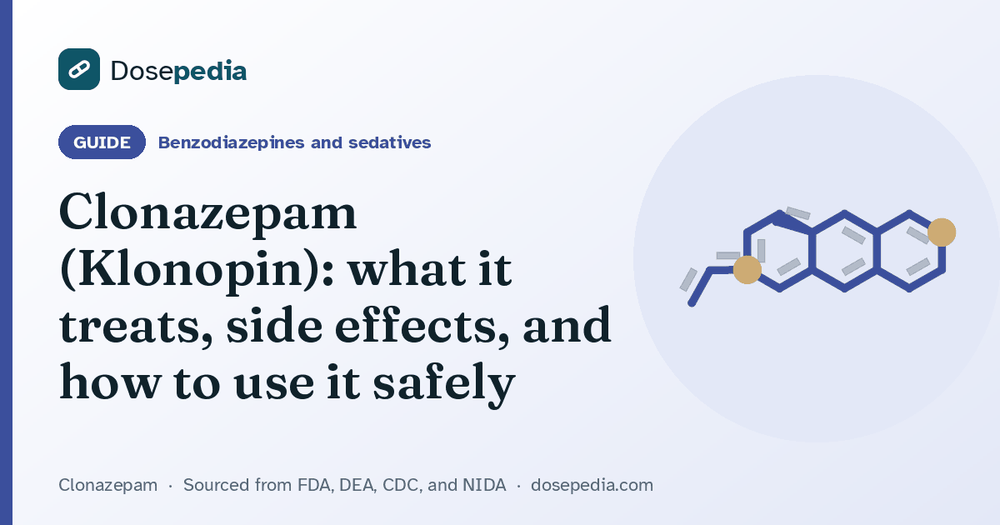
Clonazepam (Klonopin): what it treats, side effects, and how to use it safely
Clonazepam (Klonopin) is a long-acting benzodiazepine used for panic disorder and certain seizure disorders. It is a Schedule IV controlled substance. It...
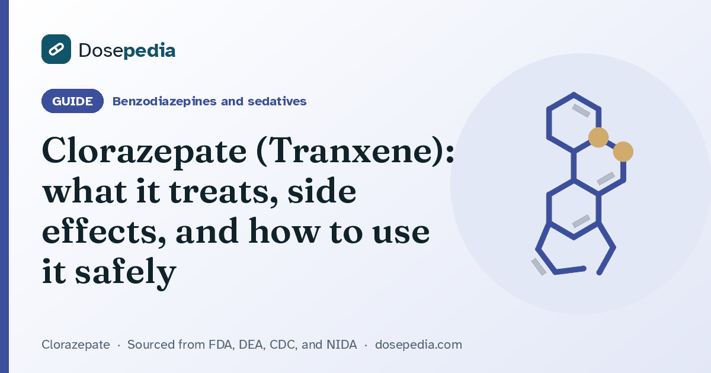
Clorazepate (Tranxene): what it treats, side effects, and how to use it safely
Clorazepate (Tranxene) is a long-acting benzodiazepine used for anxiety, as an add-on treatment for partial seizures, and for alcohol withdrawal. It is a...
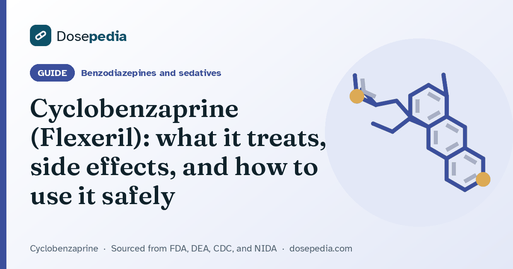
Cyclobenzaprine (Flexeril): what it treats, side effects, and how to use it safely
Cyclobenzaprine (Flexeril) is a prescription muscle relaxant for short-term relief of muscle spasm. It is not a controlled substance. Chemically related...
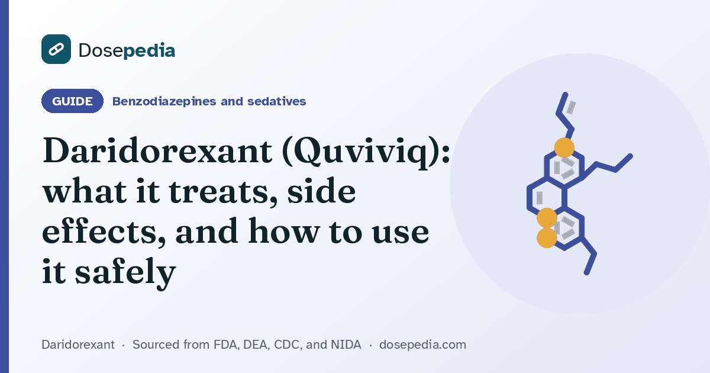
Daridorexant (Quviviq): what it treats, side effects, and how to use it safely
Daridorexant (Quviviq) is a prescription insomnia medicine that blocks orexin, a brain chemical that keeps people awake. It is a Schedule IV controlled...
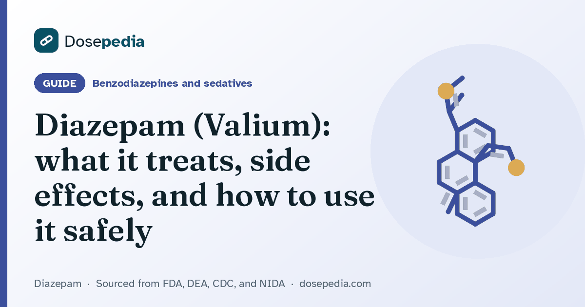
Diazepam (Valium): what it treats, side effects, and how to use it safely
Diazepam (Valium) is a long-acting benzodiazepine used for anxiety, alcohol withdrawal, muscle spasms, and seizures. Its long half-life makes it a common...
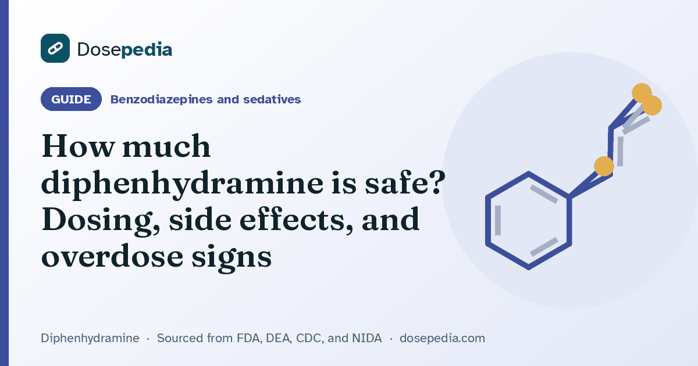
How much diphenhydramine is safe? Dosing, side effects, and overdose signs
Diphenhydramine (Benadryl) is an over-the-counter antihistamine for allergies that also causes drowsiness and is sold as a sleep aid. It is not a...
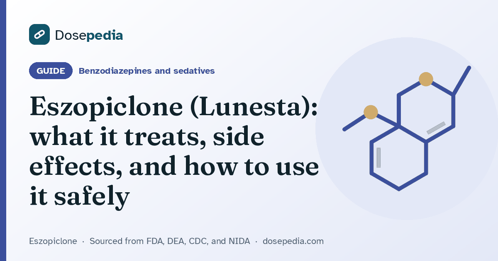
Eszopiclone (Lunesta): what it treats, side effects, and how to use it safely
Eszopiclone (Lunesta) is a Z-drug sleep medicine for trouble falling or staying asleep. It is a Schedule IV controlled substance. Like zolpidem, it...
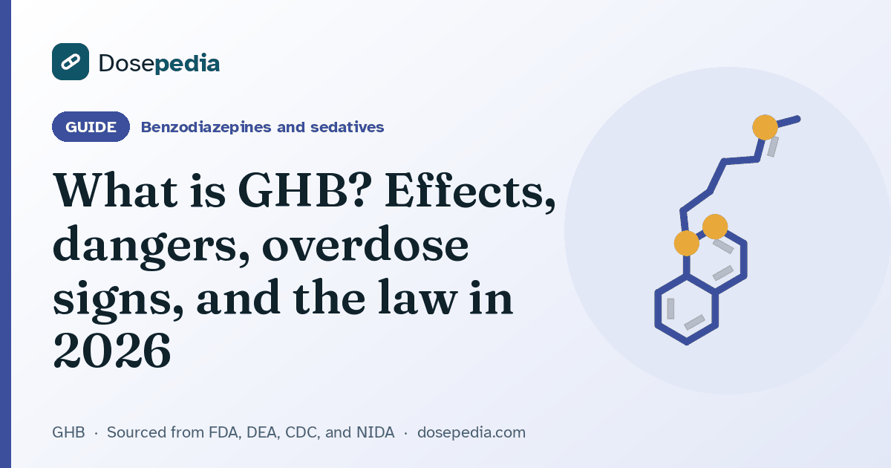
What is GHB? Effects, dangers, overdose signs, and the law in 2026
GHB (gamma-hydroxybutyrate) is a central nervous system depressant sold illegally as a clear liquid or powder. It is Schedule I, while its approved...
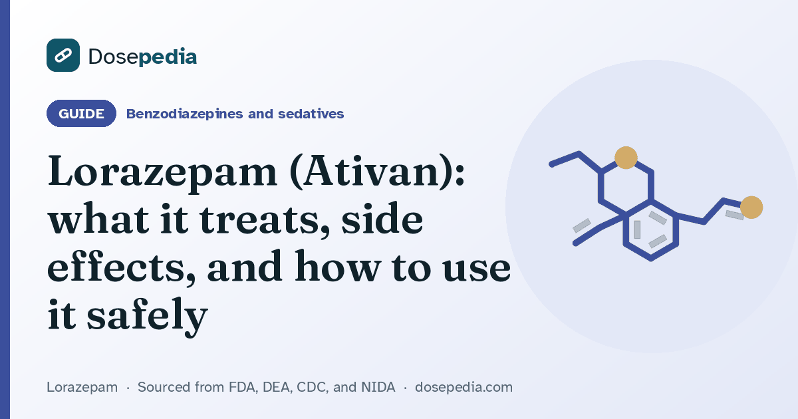
Lorazepam (Ativan): what it treats, side effects, and how to use it safely
Lorazepam (Ativan) is an intermediate-acting benzodiazepine used for anxiety, short-term insomnia caused by anxiety, and, by injection, for status...
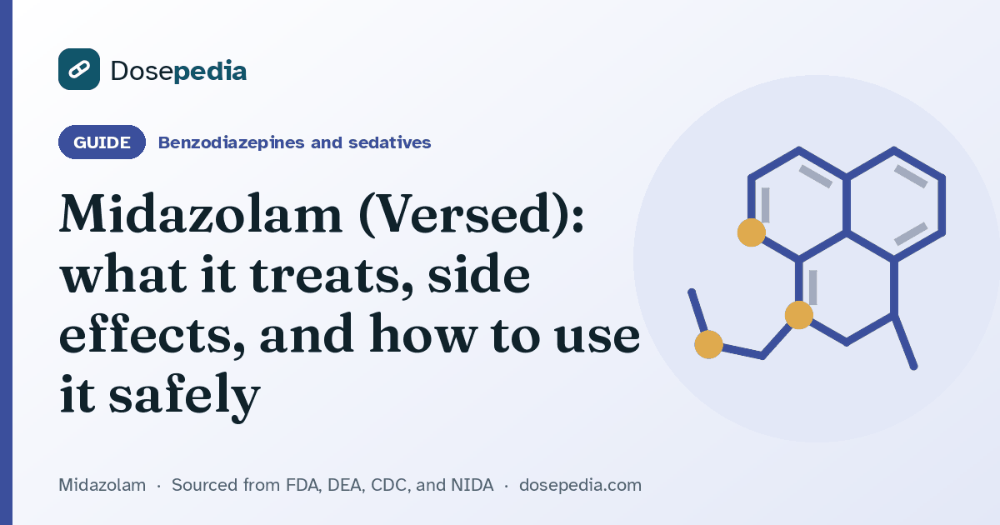
Midazolam (Versed): what it treats, side effects, and how to use it safely
Midazolam is a fast, short-acting benzodiazepine used to sedate people for procedures and surgery and, as Nayzilam nasal spray, to stop seizure clusters...
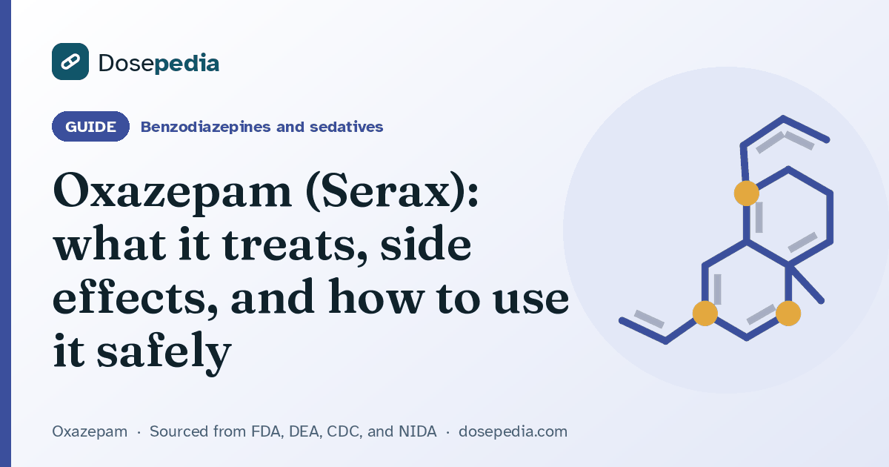
Oxazepam (Serax): what it treats, side effects, and how to use it safely
Oxazepam is an intermediate-acting benzodiazepine for anxiety and alcohol withdrawal. It is a Schedule IV prescription medicine. Because it is cleared...
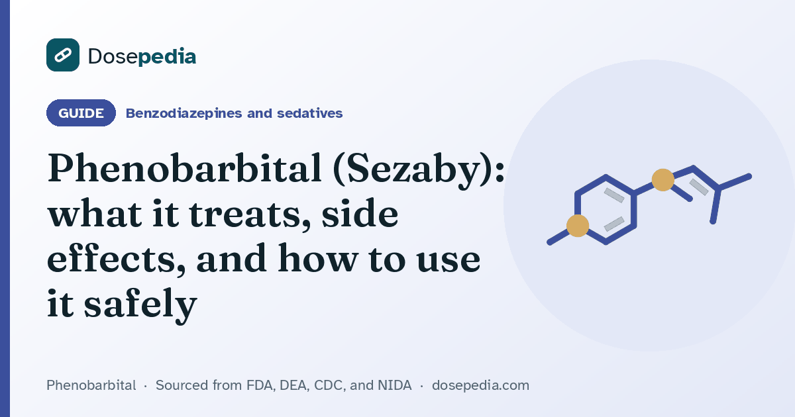
Phenobarbital (Sezaby): what it treats, side effects, and how to use it safely
Phenobarbital is a long-acting barbiturate used mainly for seizures and, in hospitals, for alcohol withdrawal. It is one of the oldest medicines still in...
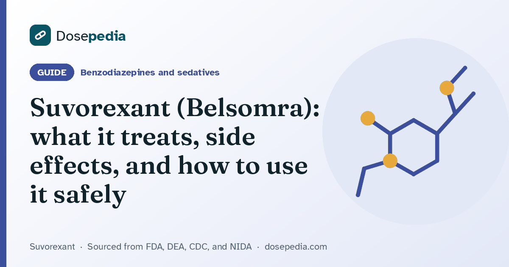
Suvorexant (Belsomra): what it treats, side effects, and how to use it safely
Suvorexant (Belsomra) is a sleep medicine that blocks orexin, a brain chemical that keeps you awake, rather than boosting GABA like benzodiazepines and...
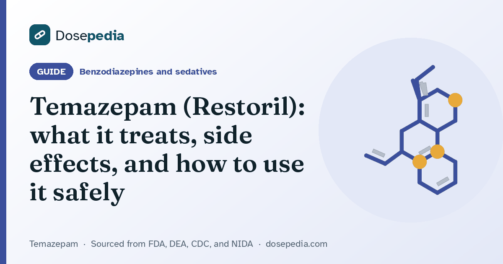
Temazepam (Restoril): what it treats, side effects, and how to use it safely
Temazepam (Restoril) is a benzodiazepine sleeping pill approved for short-term treatment of insomnia, usually 7 to 10 days. It is a Schedule IV controlled...
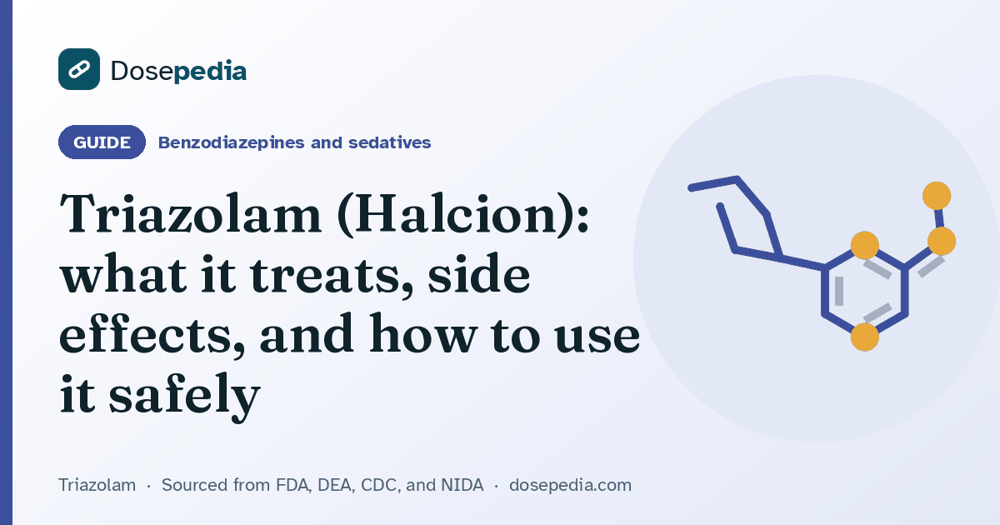
Triazolam (Halcion): what it treats, side effects, and how to use it safely
Triazolam (Halcion) is a short-acting benzodiazepine sleeping pill for short-term insomnia, usually 7 to 10 days. It is a Schedule IV controlled...
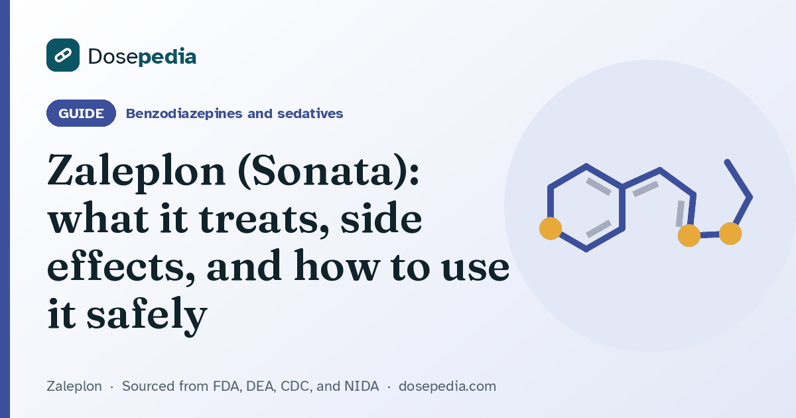
Zaleplon (Sonata): what it treats, side effects, and how to use it safely
Zaleplon (Sonata) is a very short-acting prescription sleep medicine, a Z-drug related to zolpidem, for trouble falling asleep. It is a Schedule IV...
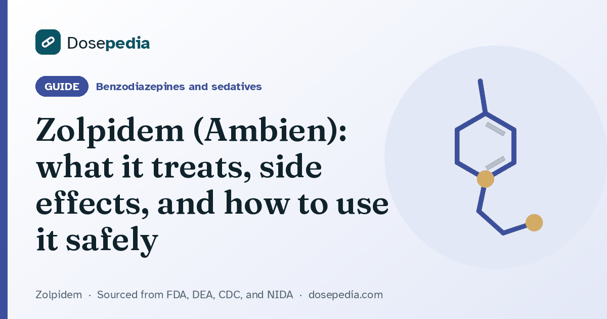
Zolpidem (Ambien): what it treats, side effects, and how to use it safely
Zolpidem (Ambien) is a prescription sleep medicine that acts on the same brain receptors as benzodiazepines. It is a Schedule IV controlled substance. Its...
Stimulants
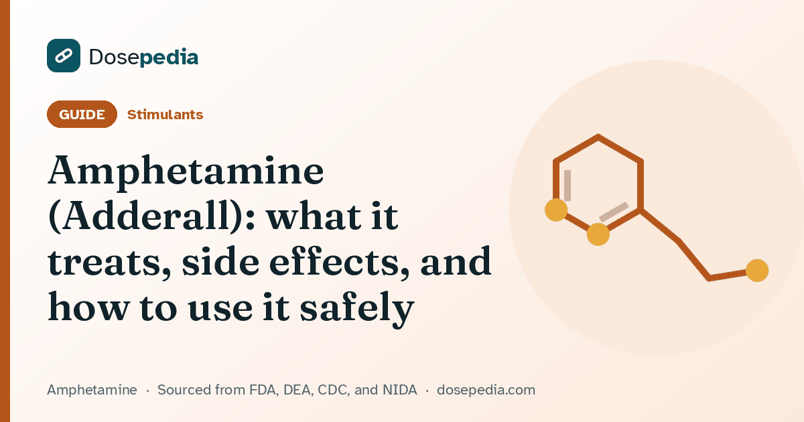
Amphetamine (Adderall): what it treats, side effects, and how to use it safely
Adderall is a mix of four amphetamine salts (about three parts dextroamphetamine to one part levoamphetamine) used to treat ADHD and narcolepsy. It is one...
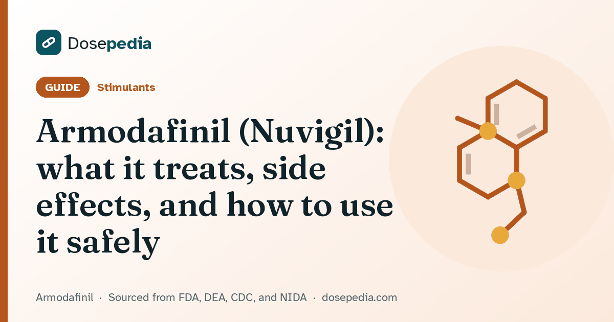
Armodafinil (Nuvigil): what it treats, side effects, and how to use it safely
Armodafinil (Nuvigil) is a prescription wakefulness medicine for narcolepsy, sleepiness from obstructive sleep apnea, and shift work disorder. It is a...
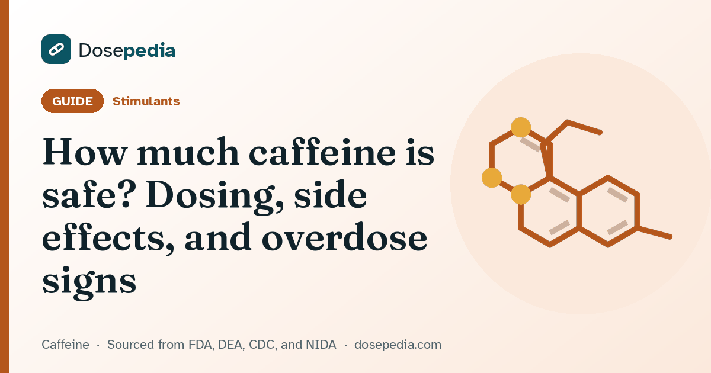
How much caffeine is safe? Dosing, side effects, and overdose signs
Caffeine is the world's most widely used psychoactive substance, found in coffee, tea, soda, energy drinks, and over-the-counter alertness pills. For most...
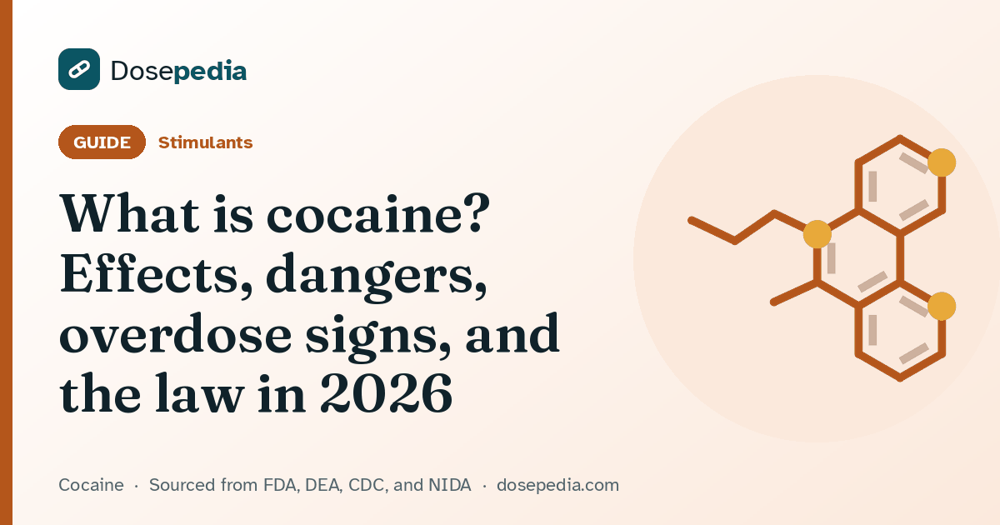
What is cocaine? Effects, dangers, overdose signs, and the law in 2026
Cocaine is a stimulant made from the leaves of the coca plant. It has a narrow medical use as a nasal anesthetic, which is why it is Schedule II rather...
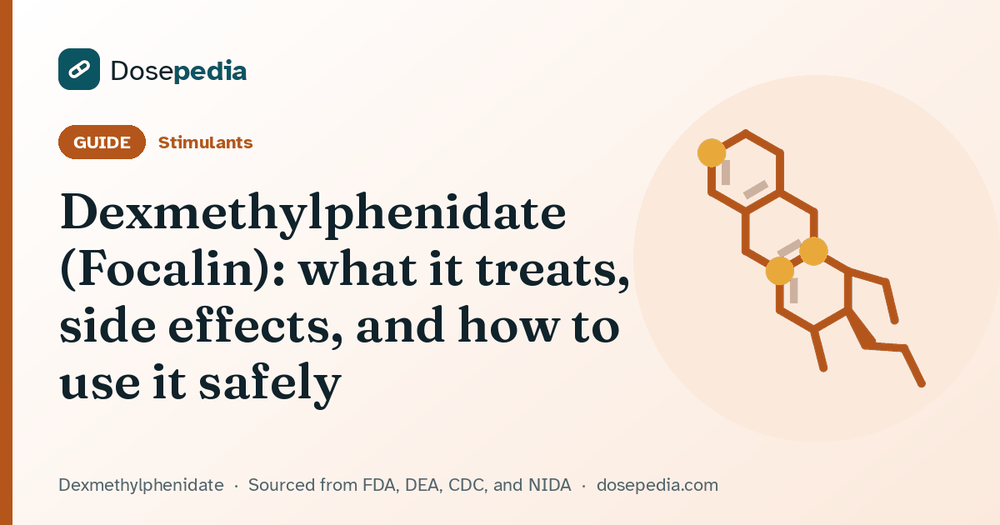
Dexmethylphenidate (Focalin): what it treats, side effects, and how to use it safely
Dexmethylphenidate (Focalin) is the more active half of methylphenidate, so it works at about half the dose. It is used for ADHD and is a Schedule II...
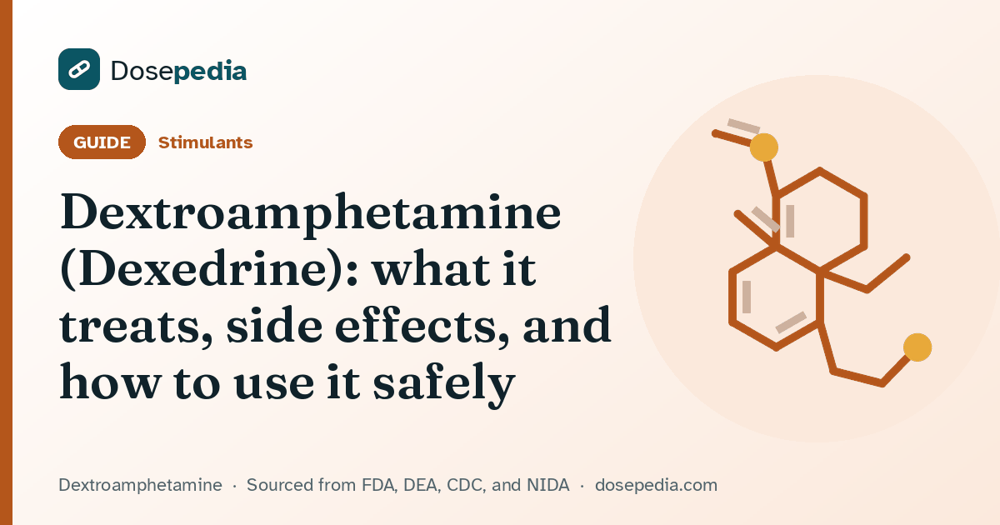
Dextroamphetamine (Dexedrine): what it treats, side effects, and how to use it safely
Dextroamphetamine is the more active form (isomer) of amphetamine. It is used for ADHD and narcolepsy as tablets, long-acting capsules, a liquid, and a...
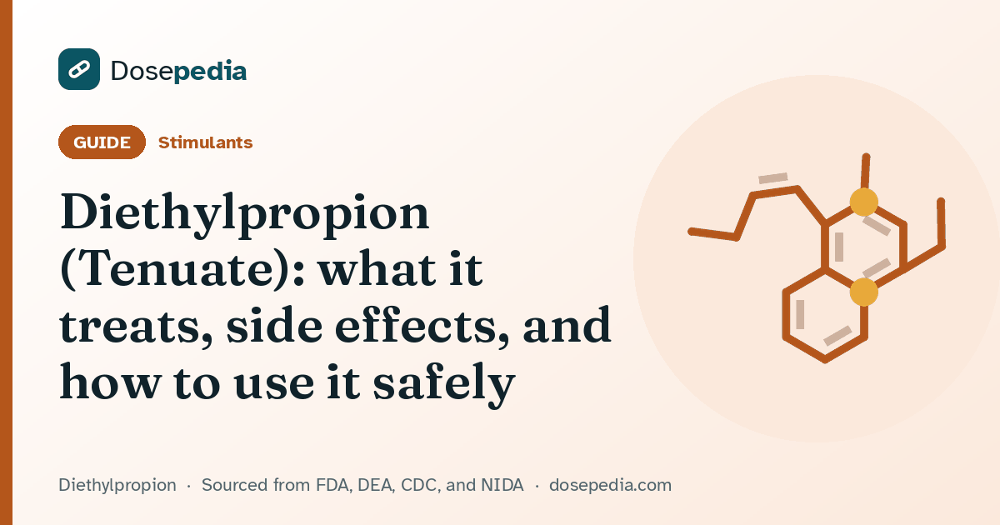
Diethylpropion (Tenuate): what it treats, side effects, and how to use it safely
Diethylpropion, called amfepramone outside the US, is a prescription appetite suppressant for a few weeks of use in obesity. It is a Schedule IV...
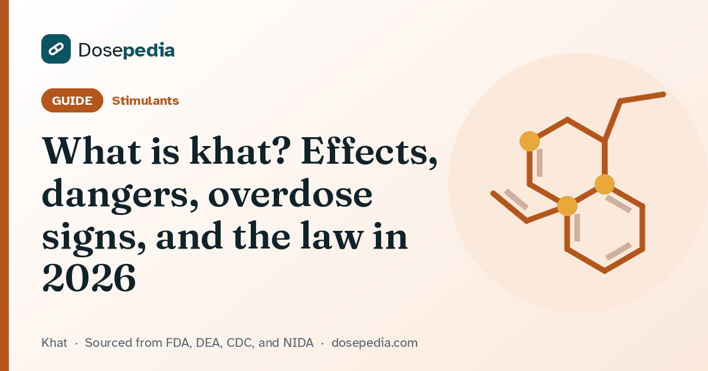
What is khat? Effects, dangers, overdose signs, and the law in 2026
Khat is a shrub whose fresh leaves are chewed for a stimulant effect in East Africa and the Arabian Peninsula. Its main active ingredient, cathinone, is...
Lisdexamfetamine (Vyvanse): what it treats, side effects, and how to use it safely
Lisdexamfetamine (Vyvanse) is an inactive prodrug that the body slowly converts into dextroamphetamine. It is used for ADHD and moderate to severe binge...
What is methamphetamine? Effects, dangers, overdose signs, and the law in 2026
Methamphetamine is a powerful stimulant. A prescription form, Desoxyn, is approved for ADHD but rarely used. Nearly all methamphetamine in the US is made...
Methylphenidate (Ritalin): what it treats, side effects, and how to use it safely
Methylphenidate (Ritalin, Concerta) is the most widely used ADHD medicine besides amphetamines. It blocks the reuptake of dopamine and norepinephrine...
Modafinil (Provigil): what it treats, side effects, and how to use it safely
Modafinil (Provigil) is a wakefulness-promoting medicine for excessive sleepiness from narcolepsy, obstructive sleep apnea, and shift work disorder. It is...
Phendimetrazine (Bontril PDM): what it treats, side effects, and how to use it safely
Phendimetrazine (Bontril) is a prescription appetite suppressant for short-term use, a few weeks, alongside diet and exercise in people with obesity. It...
Phentermine (Adipex-P): what it treats, side effects, and how to use it safely
Phentermine (Adipex-P) is an appetite suppressant related to amphetamine, used for a few weeks as part of a weight-loss program in people with obesity. It...
How much pseudoephedrine is safe? Dosing, side effects, and overdose signs
Pseudoephedrine (Sudafed) is a decongestant sold without a prescription but kept behind the pharmacy counter. It is not a controlled substance, but...
Solriamfetol (Sunosi): what it treats, side effects, and how to use it safely
Solriamfetol (Sunosi) is a prescription medicine that improves wakefulness in adults with narcolepsy or obstructive sleep apnea. It is a Schedule IV...
What is synthetic cathinones? Effects, dangers, overdose signs, and the law in 2026
Synthetic cathinones are lab-made stimulants related to khat, sold as 'bath salts', 'flakka', or disguised as molly or other drugs. Most are Schedule I....
Gabapentinoids, dissociatives, and others
Brivaracetam (Briviact): what it treats, side effects, and how to use it safely
Brivaracetam (Briviact) is a prescription antiseizure medicine for partial-onset seizures in people 1 month and older. It is a Schedule V controlled...
Cenobamate (Xcopri): what it treats, side effects, and how to use it safely
Cenobamate (Xcopri) is a prescription antiseizure medicine for partial-onset seizures in adults, approved in 2019. It is a Schedule V controlled...
How much dextromethorphan is safe? Dosing, side effects, and overdose signs
Dextromethorphan (DXM) is the cough suppressant in many over-the-counter medicines, such as Delsym, Robitussin DM, and NyQuil. It is safe at label doses...
Dronabinol (Marinol): what it treats, side effects, and how to use it safely
Dronabinol (Marinol) is synthetic THC, the main psychoactive compound in cannabis, made as an FDA-approved medicine. It treats nausea and vomiting from...
Esketamine (Spravato): what it treats, side effects, and how to use it safely
Esketamine (Spravato) is a nasal spray for treatment-resistant depression and for depression with suicidal thoughts. It is a form of ketamine, given only...
Gabapentin (Neurontin): what it treats, side effects, and how to use it safely
Gabapentin (Neurontin) is one of the most prescribed medicines in the US, approved for shingles nerve pain, partial seizures, and (as Horizant) restless...
Ketamine (Ketalar): what it treats, side effects, and how to use it safely
Ketamine is a dissociative anesthetic used in operating rooms, emergency departments, and battlefield medicine. It is also given off-label in clinics for...
Lacosamide (Vimpat): what it treats, side effects, and how to use it safely
Lacosamide (Vimpat) is a prescription antiseizure medicine for partial-onset seizures and, as add-on therapy, generalized tonic-clonic seizures. It is a...
Is nitrous oxide safe or legal? Effects, risks, and the law in 2026
Nitrous oxide is a gas used in dentistry and as a whipped-cream propellant. Inhaled recreationally from chargers, tanks, or flavored canisters such as...
Pregabalin (Lyrica): what it treats, side effects, and how to use it safely
Pregabalin (Lyrica) is a nerve pain and antiseizure medicine used for diabetic nerve pain, shingles pain, fibromyalgia, spinal cord injury pain, and...
Sodium oxybate (Xyrem): what it treats, side effects, and how to use it safely
Sodium oxybate (Xyrem) is the sodium salt of GHB (gamma-hydroxybutyrate), used to treat cataplexy and daytime sleepiness in narcolepsy. FDA-approved...
Zuranolone (Zurzuvae): what it treats, side effects, and how to use it safely
Zuranolone (Zurzuvae) is the first pill approved specifically for postpartum depression, taken once a day for 14 days. It is a Schedule IV controlled...
Cannabis and psychedelics
What is 2C-B? Effects, dangers, overdose signs, and the law in 2026
2C-B is a synthetic psychedelic related to mescaline, first made in 1974. It is Schedule I. Effects shift sharply with small dose changes, and pills or...
What is 5-MeO-DMT? Effects, dangers, overdose signs, and the law in 2026
5-MeO-DMT is a very potent, short-acting psychedelic found in the venom of the Sonoran Desert toad and some plants, and also made synthetically. It is...
Is amanita muscaria safe or legal? Effects, risks, and the law in 2026
Amanita muscaria, the red-and-white fly agaric mushroom, contains muscimol and ibotenic acid, which act on GABA and glutamate receptors, not like...
What is ayahuasca? Effects, dangers, overdose signs, and the law in 2026
Ayahuasca is a psychedelic brew from the Amazon, usually made from Banisteriopsis caapi vine and Psychotria viridis leaves. The vine contains MAO...
What is cannabis? Effects, dangers, overdose signs, and the law in 2026
Cannabis is a plant whose main psychoactive compound is THC. Adult-use (recreational) cannabis remains Schedule I under federal law, but in April 2026...
Is CBD safe or legal? Effects, risks, and the law in 2026
CBD (cannabidiol) is a non-intoxicating compound from cannabis and hemp. One prescription form, Epidiolex, is FDA-approved for rare seizure disorders....
Is delta-8 THC safe or legal? Effects, risks, and the law in 2026
Delta-8 THC is an intoxicating cannabinoid usually made by chemically converting hemp-derived CBD. It has been sold widely in gas stations, vape shops...
What is DMT? Effects, dangers, overdose signs, and the law in 2026
DMT (dimethyltryptamine) is a powerful, short-acting psychedelic found in many plants. Smoked or vaped, it lasts 5 to 20 minutes. In ayahuasca, a South...
What is ibogaine? Effects, dangers, overdose signs, and the law in 2026
Ibogaine is a psychedelic from the root bark of the African iboga shrub. It is Schedule I in the US, but interest has grown because of reports that a...
What is LSD? Effects, dangers, overdose signs, and the law in 2026
LSD (lysergic acid diethylamide) is a very potent psychedelic, active in millionths of a gram, with effects lasting 8 to 12 hours. It is Schedule I in the...
What is MDMA? Effects, dangers, overdose signs, and the law in 2026
MDMA, sold as ecstasy or molly, is a stimulant and empathy-enhancing drug that releases large amounts of serotonin. It is Schedule I in the US. Main...
What is mescaline? Effects, dangers, overdose signs, and the law in 2026
Mescaline is a psychedelic found in the peyote cactus and some other cacti, such as San Pedro. Effects last 10 to 12 hours. It is Schedule I in the US...
Nabilone (Cesamet): what it treats, side effects, and how to use it safely
Nabilone (Cesamet) is a prescription synthetic cannabinoid, similar to THC, for nausea and vomiting from chemotherapy that has not responded to standard...
What is psilocybin? Effects, dangers, overdose signs, and the law in 2026
Psilocybin is the psychedelic compound in "magic mushrooms". It is Schedule I under federal law, but Oregon and Colorado run state-regulated psilocybin...
Is salvia divinorum safe or legal? Effects, risks, and the law in 2026
Salvia divinorum is a Mexican plant whose active compound, salvinorin A, causes intense but very brief hallucinations when smoked or chewed. It is not...
What is synthetic cannabinoids? Effects, dangers, overdose signs, and the law in 2026
Synthetic cannabinoids, sold as K2 or Spice, are lab-made chemicals sprayed onto plant material or sold as vape liquids. They act on the same receptors as...
Anabolic steroids
What is methandrostenolone? Effects, dangers, overdose signs, and the law in 2026
Methandrostenolone (Dianabol, 'D-bol') is an oral anabolic steroid developed in the 1950s that was the first widely misused steroid in sport. It is no...
Nandrolone: what it treats, side effects, and how to use it safely
Nandrolone is an injectable anabolic steroid. Nandrolone decanoate is FDA-approved for anemia of kidney disease, but the brand Deca-Durabolin left the US...
What is oxandrolone? Effects, dangers, overdose signs, and the law in 2026
Oxandrolone (Anavar, Oxandrin) is an oral anabolic steroid once prescribed for weight loss after surgery, trauma, or infection. In 2023 the FDA withdrew...
Oxymetholone (Anadrol-50): what it treats, side effects, and how to use it safely
Oxymetholone (Anadrol-50) is an oral anabolic steroid approved for anemias caused by the bone marrow not making enough red blood cells. It is a Schedule...
Is SARMs safe or legal? Effects, risks, and the law in 2026
SARMs (selective androgen receptor modulators) are experimental drugs designed to build muscle with fewer side effects than steroids. None is...
What is stanozolol? Effects, dangers, overdose signs, and the law in 2026
Stanozolol (Winstrol) is an anabolic steroid once prescribed in the US for hereditary angioedema. Human products are no longer marketed, and it is a...
Testosterone (AndroGel): what it treats, side effects, and how to use it safely
Testosterone is the main male sex hormone, prescribed to men with confirmed low testosterone caused by a medical condition (hypogonadism). It comes as...
What is trenbolone? Effects, dangers, overdose signs, and the law in 2026
Trenbolone ('tren') is a very potent anabolic steroid approved only as a growth implant for cattle. It has never been approved for people and is a...
Emerging and unscheduled substances
Is 7-OH safe or legal? Effects, risks, and the law in 2026
7-OH (7-hydroxymitragynine) is a potent opioid compound found in trace amounts in kratom and sold in concentrated tablets, gummies, and shots in gas...
What is bromazolam? Effects, dangers, overdose signs, and the law in 2026
Bromazolam is a designer benzodiazepine never approved anywhere as a medicine. Since about 2022 it has been the most common benzodiazepine found in...
What is etizolam? Effects, dangers, overdose signs, and the law in 2026
Etizolam is a benzodiazepine-like drug prescribed for anxiety in Japan, Italy, and India but never approved in the US. It was sold online as a 'research...
Is HHC safe or legal? Effects, risks, and the law in 2026
HHC (hexahydrocannabinol) is a semi-synthetic cannabinoid made from hemp-derived CBD, with effects similar to THC. It spread rapidly in vape shops in the...
Is kratom safe or legal? Effects, risks, and the law in 2026
Kratom is a Southeast Asian tree whose leaves contain mitragynine and 7-hydroxymitragynine (7-OH), which act on opioid receptors. At low doses it is...
Is medetomidine safe or legal? Effects, risks, and the law in 2026
Medetomidine is a powerful veterinary sedative that, since late 2024, has replaced xylazine as a common adulterant in illicit fentanyl in Philadelphia...
What is nitazenes? Effects, dangers, overdose signs, and the law in 2026
Nitazenes are a group of synthetic opioids, first made in the 1950s but never approved as medicines, that have appeared in the illicit drug supply since...
What is PCP? Effects, dangers, overdose signs, and the law in 2026
PCP (phencyclidine), also called angel dust, is a dissociative drug developed as an anesthetic in the 1950s and abandoned because of severe agitation and...
Is phenibut safe or legal? Effects, risks, and the law in 2026
Phenibut is a sedative related to GABA and baclofen, prescribed for anxiety and sleep in Russia and Latvia. In the US it is not approved and cannot...
Is tianeptine safe or legal? Effects, risks, and the law in 2026
Tianeptine is an antidepressant approved in some European, Asian, and Latin American countries but never in the US. At high doses it activates opioid...
Is xylazine safe or legal? Effects, risks, and the law in 2026
Xylazine is a veterinary sedative that has spread through the illicit fentanyl supply as "tranq". It is not approved for people. It deepens and prolongs...
No guides match. Try clearing a filter.